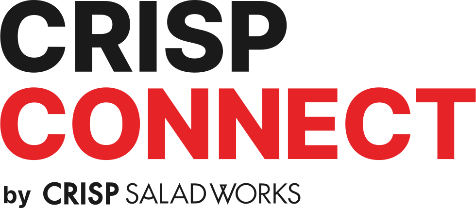
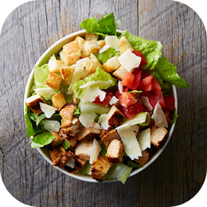
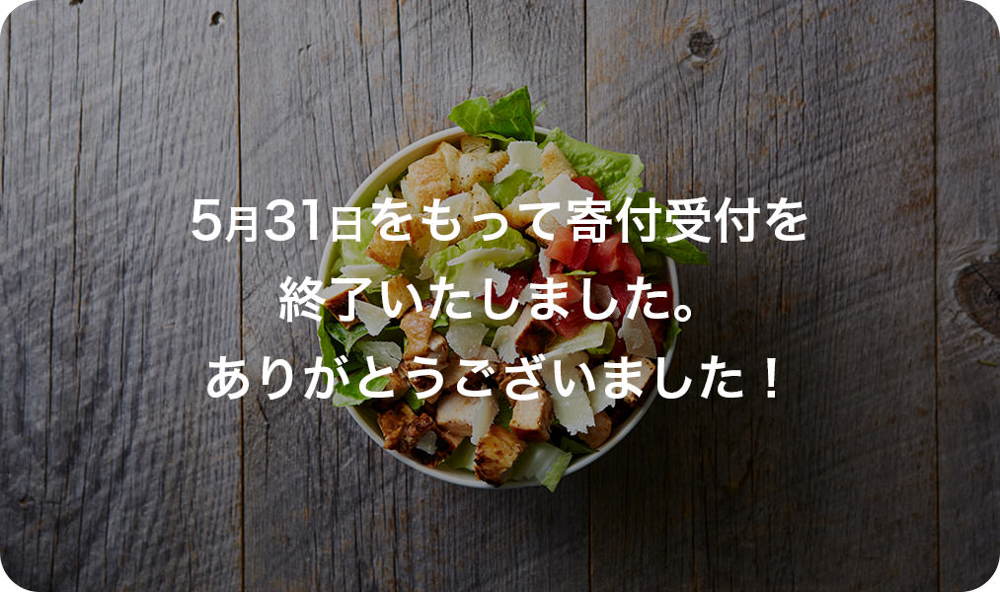
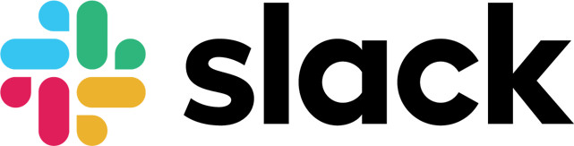
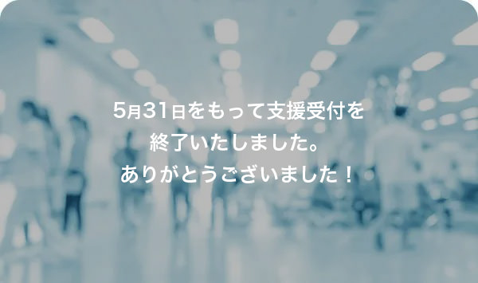

提供したサラダ
25,889
個
支援した病院
37
箇所
寄附金の合計
20,403,310
円
2020年7月3日 23:00 現在
新型コロナウイルスと闘う医療従事者・病院勤務者を支援する「CRISP CONNECT」に、あなたの力を貸してくれませんか？
English version
すべて見る
支援活動履歴
-
2020.5.27
-
2020.5.12
-
2020.5.5
-
2020.5.4
-
2020.4.18
-
2020.4.15
-
2020.4.10
-
2020.4.6
-
2020.4.6
-
2020.3.30
-
2020.3.25
支援方法
直接寄付
CRISP CONNECT への寄付を通じて前線の医療現場へより多くのサラダを届けることができるようになります。なお、CRISP CONNECT への寄付は前線で闘う医療関係者へサラダを無償提供するために100%利用されます。

ボランティア活動
slackの CRISP CONNECT コミュニティに参加をお願いします。病院へのサラダの配送や支援の輪を広げるための活動、コミュニティの運営などに協力してくれるボランティアを募っています。

コミュニティに参加する(終了しました)
皆さまの温かい声も同時に医療現場へ届けたいと思っています。医療従事者への応援メッセージを頂ける方はこちらよりお送りください。CRISP CONNECTのTwitterに投稿されます。
医療従事者へメッセージを送る(終了しました)

支援を希望する医療機関の方へ
新型コロナウイルスと闘うあなたの病院でサラダの無償提供・配達をご希望される場合は、以下から問い合わせをお願いします。
全てのリクエストに応えることはできないかもしれませんが、私たちのできる限りの範囲でCONNECTチームの担当者から連絡をさせていただきます。
支援企業一覧
食材・物品の寄付をご検討いただいている皆さまへ、私たちからのお願いがあります。
食材・物品の寄付の受入状況について
- 株式会社Gurus Film Production
山下文隆 / 若井智史 / メルニコヴァアンナ
Movie制作 - ジボダンジャパン株式会社
寄付 - 株式会社シール堂印刷
応援ステッカー支援 - 東京中小企業投資育成株式会社
物品支援 - 株式会社バケモノ
Webサイト制作・運営支援 - 服部コーヒーフーズ株式会社
物品支援 - 株式会社プレコヴィユニット
食材支援 - 株式会社マチルダ
食材支援 / 配送協力支援 - USAライス連合会
食材支援
寄付する